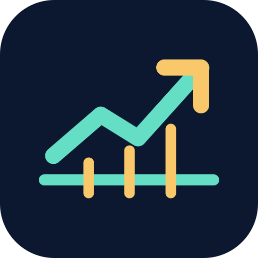

سهامبان
محاسبهگر حجم خرید
رایگانبرای محاسبه دکمه را بزنید.
حجم پیشنهادی = کمترین مقدار بین «حداکثر تعداد بر اساس زیان مجاز» و «حداکثر تعداد بر اساس بودجه». کارمزد، مالیات، لغزش قیمت، نقدشوندگی و محدودیتهای بازار در این محاسبه لحاظ نشدهاند؛ بنابراین ریسک واقعی ممکن است بیشتر باشد.
هشدار دستی قیمت
رایگانبرای هشدار صوتی، تنظیمات صدا و مجوز مرورگر مهماند. اعلان در پسزمینه و دریافت خودکار قیمت هنوز پیادهسازی نشدهاند.
اتصال آزمایشی بورس ایران
آزمایشی · بدون اشتراکجستوجوی نماد و دریافت تاریخچه قیمت پایانی از TSETMC؛ نتیجه به شرایط دسترسی شبکه و محدودیت جغرافیایی منبع وابسته است. این دادهها لزوماً زنده نیستند. قیمتها در منبع به ریال ارائه میشوند؛ تحلیل تاریخی با همان واحد ریال انجام میشود.
بررسی قیمت منبع و هشدار شرطی (ریال)
با زدن دکمه، یک درخواست تازه به TSETMC ارسال میشود. این داده ممکن است با تأخیر منتشر شده باشد و پایش خودکار یا لحظهای نیست. با هر کلیک، نتیجه قبلی پاک میشود.
هنوز درخواست دریافت قیمت ارسال نشده است.
مرجع مقایسه، آخرین «قیمت پایانی» گزارششده است، نه آخرین معامله. در صورت خطا هشدار صادر نمیشود. صدای فارسی و ارتعاش به امکانات و اجازه گوشی وابستهاند؛ اعلان پسزمینه وجود ندارد.
هنوز دادهای دریافت نشده است. هنگام قطع اتصال، هیچ قیمت قدیمی بهعنوان قیمت جدید نمایش داده نمیشود.
این اتصال مستقیماً از مرورگر به منبع درخواست میفرستد. ممکن است به دلیل محدودیت مبدأ، CORS یا سیاست شبکه کار نکند. هیچ سرور واسط یا دورزدن محدودیتها در این نسخه وجود ندارد. پیش از انتشار عمومی و فروش اشتراک، مجوز استفاده و بازنشر داده باید احراز شود.
هشدارهای چند سهم
رایگان · بررسی گروهی دستیشناسه ابزار هر نماد را از بخش جستوجوی بورس پیدا کنید. حد پایین و بالا را به ریال وارد کنید. فهرست روی همین دستگاه ذخیره میشود. با زدن «بررسی همه»، قیمت پایانی هر نماد جداگانه از منبع دریافت میشود؛ نتیجه ممکن است تأخیری باشد.
این بخش در پسزمینه اجرا نمیشود و اعلان دائمی ندارد. خطای هر نماد بهطور مستقل ثبت میشود.
تحلیل تاریخچه قیمت
رایگان · آفلاینفایل CSV با ستون close یا «قیمت پایانی» (اختیاری: date / تاریخ) را وارد کنید، یا قیمتهای پایانی را بهترتیب قدیم به جدید، هر خط یک عدد، درج کنید. تحلیل فقط روی دادههای شما انجام میشود.
برای تحلیل حداقل ۱۵ قیمت پایانی وارد کنید؛ برای میانگین ۵۰روزه، حداقل ۵۰ قیمت لازم است.
RSI و میانگینهای متحرک شاخصهای توصیفی هستند، نه پیشبینی قطعی. فایلها فقط در مرورگر پردازش میشوند و به سرور ارسال نمیشوند. داده نمایشی واقعی نیست.
ورود سبد از فایل کارگزاری
برای همه کارگزاریها: فایل CSV یا Excel شامل نام نماد، تعداد، میانگین خرید و قیمت پایانی. فعلاً قالب واقعی ایزیتریدر مفید آزموده شده است؛ فایل کارگزاریهای دیگر پس از انتخاب ستونها قابل بررسی است. فایل فقط در مرورگر پردازش میشود و نام کاربری یا رمز لازم نیست.
فایلی انتخاب نشده است. خواندن Excel و CSV در همین مرورگر و بدون ارسال اطلاعات به سرور انجام میشود.
تطبیق ستونهای فایل
| نماد | تعداد | خرید (ریال) | پایانی (ریال) | وضعیت |
|---|
این داراییها جدا از سبد تحلیل ریسک ذخیره میشوند؛ جایگزین سبد قبلی نمیشوند. برای تحلیل ریسک باید حد ضرر و حد سود واقعی هر سهم را بعداً مشخص کنید.
ارزش روز داراییهای واردشده
این بخش قیمت پایانی را مستقیماً از API بازار TSETMC میخواند. همه نمادها باید با شناسه یکتا و تاریخ بازار معتبر دریافت شوند؛ اگر حتی یک نماد ناموفق یا قدیمی باشد، جمع جدید نمایش داده نمیشود. قیمتها در کلید جداگانه ذخیره میشوند و تعداد و میانگین خرید تغییر نمیکنند. رمز کارگزاری لازم نیست.
هنوز قیمت تازهای دریافت نشده است.
| نماد | تعداد | خرید (ریال) | پایانی (ریال) | ارزش محاسباتی (ریال) | سود/زیان (ریال) | تاریخ بازار |
|---|
منبع قیمت به دسترسی شبکه، سیاست CORS و محدودیت جغرافیایی وابسته است. زمان دریافت پاسخ، زمان آخرین معامله نیست. در صورت شکست درخواست، به قیمتهای قبلی بهعنوان قیمت روز اعتماد نکنید.
گزارش مدیریت ریسک سبد
رایگان · آفلاینبرای هر سهم یک سطر بنویسید: نماد، تعداد، میانگین قیمت خرید، قیمت فعلی، حد ضرر، حد سود. همه قیمتها به ریال هستند. دادههای زیر صرفاً نمونهاند.
افزودن یا ویرایش سهم با فرم ساده
قیمتها به ریالاند. اگر نماد تکراری وارد کنید، اطلاعات همان نماد جایگزین میشود. هنگام افزودن اولین سهم واقعی، ردیفهای نمونه حذف میشوند.
حذف یا ویرایش فقط اطلاعات فعلی صفحه را تغییر میدهد. نسخهای که قبلاً روی گوشی ذخیره کردهاید تا زمانی که دوباره «ذخیره سبد» را نزنید، تغییر نمیکند.
هنوز سهمی از این فرم ثبت نشده است.
ذخیره فقط با لمس «ذخیره سبد» انجام میشود و اطلاعات در حافظه همین مرورگر باقی میماند؛ از اطلاعات حساس استفاده نکنید.
برای بازیابی، ابتدا فایل JSON را انتخاب کنید؛ تا پیش از تأیید، اطلاعات فعلی تغییر نمیکنند.
وضعیت ذخیره سبد در حال بررسی است.
هنوز اطلاعاتی ذخیره نشده است یا وضعیت ذخیرهسازی بررسی نشده است.
این انتخاب فقط ترتیب نمایش جدول را تغییر میدهد؛ اطلاعات اصلی و فایل پشتیبان تغییر نمیکنند.
محاسبه گزارش سبد آماده است. دادههای نمایشی را میتوانید با اطلاعات خود جایگزین کنید.
زیان تا حد ضرر فرض میکند فروش دقیقاً در قیمت حد ضرر ممکن است؛ در بازار واقعی صف فروش، گپ قیمتی، کارمزد و لغزش میتوانند زیان را بیشتر کنند. سود احتمالی تا حد سود نیز تضمینشده نیست. تمرکز سبد براساس ارزش جاری محاسبه میشود.
سهامبان حرفهای در دست طراحی؛ فروش غیرفعال
در نسخه تجاری آینده: پایش خودکار قیمت، تحلیل چندشاخصی با داده معتبر، گزارش سبد و مدیریت ریسک پیشرفته. ارائه توصیه شخصی خرید و فروش منوط به بررسی الزامات قانونی و مجوزهای لازم خواهد بود.